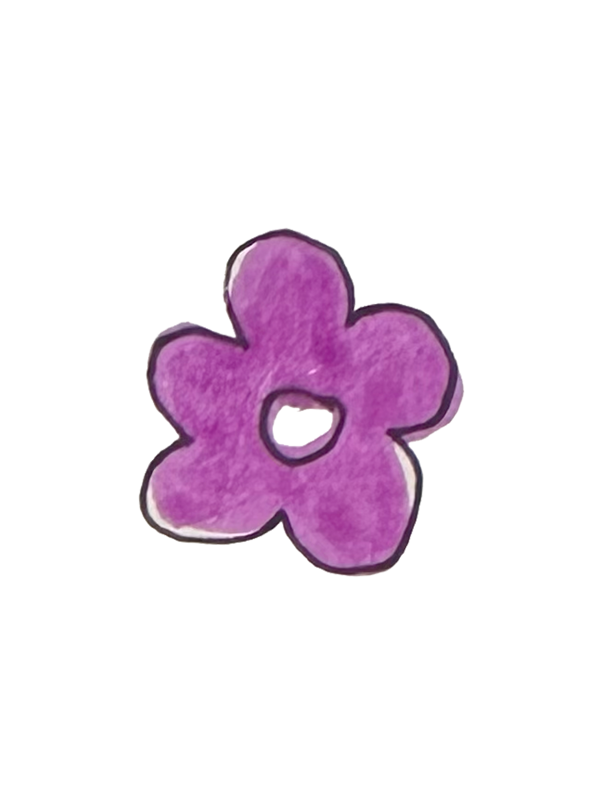
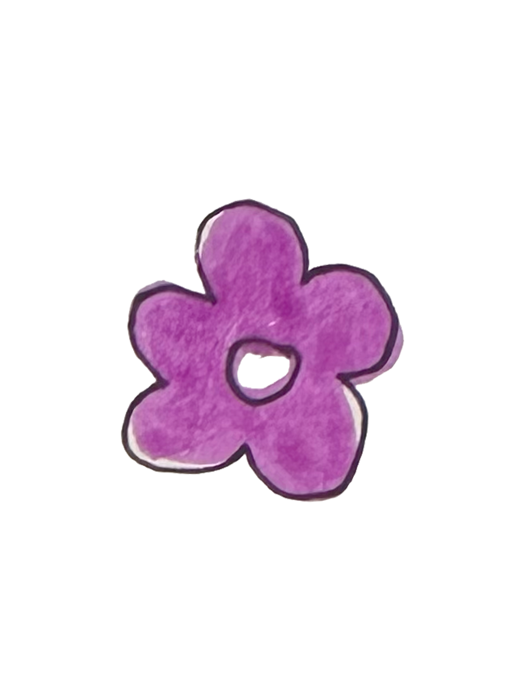

home
My Blog 💌
November 8, 2024 ---
This night, I met her again, but this time with purpose. Ellie and I agreed to meet at dusk, where shadows might shield us from mortal eyes. I waited in the grove beyond the Pollak building, hidden amongst the trees, and soon she came, swift as a shadow through the twilight. We spoke freely, without fear, and she asked of my world and why I lingered in hers. I shared my longing to understand them, and she spoke of her kin, her songs, and her memories. In her, I saw a light I’ve never witnessed in a mortal before—bright and pure, like a spark that warms the soul.
This night, I met her again, but this time with purpose. Ellie and I agreed to meet at dusk, where shadows might shield us from mortal eyes. I waited in the grove beyond the Pollak building, hidden amongst the trees, and soon she came, swift as a shadow through the twilight. We spoke freely, without fear, and she asked of my world and why I lingered in hers. I shared my longing to understand them, and she spoke of her kin, her songs, and her memories. In her, I saw a light I’ve never witnessed in a mortal before—bright and pure, like a spark that warms the soul.
November 1, 2024 ---
All the long day, her visage hath haunted mine thoughts. In my time, I have crossed paths with many a cruel mortal, yet this one—she was different. Her countenance held kindness, and in her eyes, a worry for me. An odd pull drove me hence today, to return to the same place, at the same hour. And lo, there she stood, waiting. We spoke, and for the first time, I did converse with a human. She spoke of danger—her friend had warned the authorities, and she said I should ne’er return to this place. But something draws me back. She was so curious, so kind. Her name was Ellie.
All the long day, her visage hath haunted mine thoughts. In my time, I have crossed paths with many a cruel mortal, yet this one—she was different. Her countenance held kindness, and in her eyes, a worry for me. An odd pull drove me hence today, to return to the same place, at the same hour. And lo, there she stood, waiting. We spoke, and for the first time, I did converse with a human. She spoke of danger—her friend had warned the authorities, and she said I should ne’er return to this place. But something draws me back. She was so curious, so kind. Her name was Ellie.
October 22, 2024 ---
The morn hath brought unease to mine heart. I returned to the Pollak Building, seeking solace amid the art-lined halls, but instead, I found a horror most dreadful—signs, plastered upon every wall, bearing a crude sketch that mimics my likeness. "Wanted," they read, with promises of reward for mine capture. Betrayal! How could the mortals I chanced upon last night expose me so? To endanger a fairy so carelessly—it wounds my spirit deeply.
As I lingered, eyes tracing the ink that now threatens my freedom, a sound caught my ear. Down the corridor stood the girl, her gaze upon me once more. Panic seized me, and I fluttered back, wings trembling to carry me far from her sight. But then, her voice rang out—soft, pleading. "It wasn’t me! Please! It wasn’t me!" she cried, her words chasing after me like an echo on the wind.
Her tone bore no malice, only desperation, yet I am torn. Dare I trust her when the world seems set against me?
The morn hath brought unease to mine heart. I returned to the Pollak Building, seeking solace amid the art-lined halls, but instead, I found a horror most dreadful—signs, plastered upon every wall, bearing a crude sketch that mimics my likeness. "Wanted," they read, with promises of reward for mine capture. Betrayal! How could the mortals I chanced upon last night expose me so? To endanger a fairy so carelessly—it wounds my spirit deeply.
As I lingered, eyes tracing the ink that now threatens my freedom, a sound caught my ear. Down the corridor stood the girl, her gaze upon me once more. Panic seized me, and I fluttered back, wings trembling to carry me far from her sight. But then, her voice rang out—soft, pleading. "It wasn’t me! Please! It wasn’t me!" she cried, her words chasing after me like an echo on the wind.
Her tone bore no malice, only desperation, yet I am torn. Dare I trust her when the world seems set against me?
October 20, 2024 ---
Alas! A grievous error hath befallen me this night.
At the stroke of three,I did, with haste, collide with two mortal souls—a girl and a boy.
They did not cry out in terror, but instead, Stood frozen, their gazes fixed upon me,
In my panic, I did drop all my carefully penned envelopes, And in haste, I flew forthwith through the window From whence I came.
I know not what will come Of this chance meeting.
I am uncertain of what the morrow brings.
Alas! A grievous error hath befallen me this night.
At the stroke of three,I did, with haste, collide with two mortal souls—a girl and a boy.
They did not cry out in terror, but instead, Stood frozen, their gazes fixed upon me,
In my panic, I did drop all my carefully penned envelopes, And in haste, I flew forthwith through the window From whence I came.
I know not what will come Of this chance meeting.
I am uncertain of what the morrow brings.
October 19, 2024 ---
I have this night left four notes upon the works of students,
Each note tucked within a card and sealed in an envelope,
I plan, come the morrow, to return and leave more of these tokens of admiration.
I have this night left four notes upon the works of students,
Each note tucked within a card and sealed in an envelope,
I plan, come the morrow, to return and leave more of these tokens of admiration.
October 17, 2024 ---
This night, I’ve chosen to venture to the third floor of Pollak's grand estate.
It hath been told to me that here, the art of graphic design is taught,
And truly, my heart doth leap with joy at this knowledge.
Upon each wall, the works of students are displayed,
I am moved, and a desire kindles within me—
To leave kind notes upon their art,
Sharing my admiration for their noble efforts.
This night, I’ve chosen to venture to the third floor of Pollak's grand estate.
It hath been told to me that here, the art of graphic design is taught,
And truly, my heart doth leap with joy at this knowledge.
Upon each wall, the works of students are displayed,
I am moved, and a desire kindles within me—
To leave kind notes upon their art,
Sharing my admiration for their noble efforts.